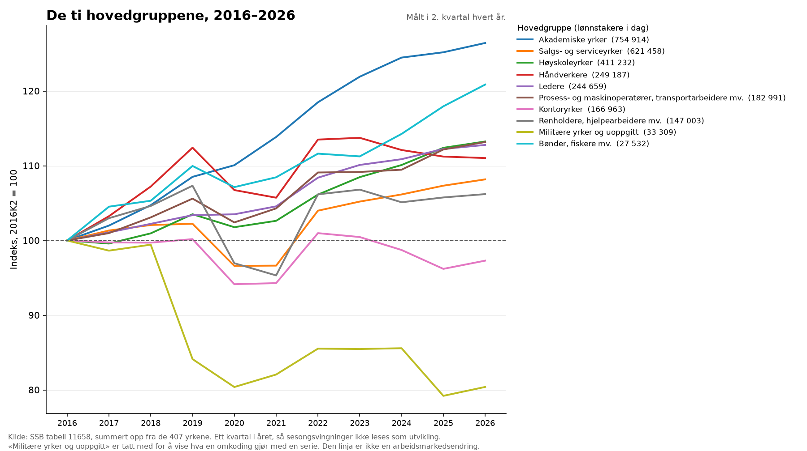

Arbeidsmarked · SSB tabell 11658
Det norske arbeidsmarkedet, yrke for yrke
Alle 400 yrker med lønnstakere i Norge, som flater etter hvor mange som jobber i dem. Seks lag å farge dem etter, og alle seks er målt — ingen framskrivinger, ingen anslag. Det egentlige arbeidet i denne saken er ikke å tegne flisene, men å vite hvilke yrker man ikke kan regne ti års endring for.
Funn
- Norge har 2 839 248 lønnstakere fordelt på 400 yrker. Det er skjevt fordelt: de ti største yrkene alene rommer 29,1 % av alle. Størst er Butikkmedarbeidere med 170 281.
- På ti år vokste antallet lønnstakere +13,0 %. Av de 292 yrkene som kan sammenlignes over perioden, vokste 224 og 68 krympet.
- Yrkene som krympet mest, er i stor grad de som ble digitalisert. De ni nederste på lista er servicemedarbeidere (bensinstasjon) (-83,3 %), arbeidsformidlere (-63,6 %), sentralbordoperatører (-56,2 %), intervjuere (-48,1 %), førtrykkere (-47,4 %), mekanikere innen flytekniske fag (-44,6 %), postbud og postsorterere (-41,6 %), håndpakkere mv. (-40,2 %), telefon- og nettselgere (-37,5 %). Dataene sier ikke hvorfor et yrke krymper, og de ni har neppe én felles forklaring. Men det er vanskelig å lese lista uten å se selvbetjente pumper, nettbaserte spørreundersøkelser, desktop publishing, e-post og digitale søknadsskjemaer i den. Uansett årsak er dette ikke en spådom om hva teknologi kan gjøre med et yrke — det er en måling av hva som faktisk skjedde.
- Øverst står andre hjelpearbeidere (+174,4 %), riggere og spleisere (+137,5 %), programvareutviklere (+122,6 %), trenere og idrettsdommere (+100,8 %), isolatører mv. (+86,8 %), systemadministratorer (+85,3 %). Toppen må leses med ett forbehold: «Andre hjelpearbeidere» er en samlekategori og ikke et yrke med et innhold, så veksten der kan like gjerne være omkoding som nye jobber. De tydelige vinnerne er de neste — og størrelsesforholdet er verdt å merke seg: 8 484 programvareutviklere, mot 170 281 butikkmedarbeidere.
- Arbeidsmarkedet er kjønnsdelt, ikke gradert. Bare 74 av 292 yrker har mellom 40 og 60 prosent kvinner, og de rommer bare 16,9 % av lønnstakerne. 23 yrker er minst 80 prosent kvinner og 93 er minst 80 prosent menn — til sammen 39,0 % av alle lønnstakere i sammenlignbare yrker.
- Sammenhengen mellom kvinneandel og lønn er der, men den er ikke en rett linje. De mannsdominerte yrkene ligger både øverst og nederst på lønn, med et vektet snitt på 58 380 kr. De kvinnedominerte ligger tettere samlet, på 54 095 kr.
Ti år

Reallønn
- Prisene steg +37,2 % på ti år. Medianlønna steg mer i nesten alle yrker — men ikke mye mer. For hele utvalget er reallønnsveksten +5,3 % over ti år, altså rundt en halv prosent i året.
- Reallønnen falt i 2023 tilbake til der den startet. Indeksen toppet seg i 2020 på 104,5, falt 4,2 poeng til 100,3 i 2023 — praktisk talt samme kjøpekraft som i 2016, sju år tidligere — og passerte den gamle toppen igjen først i 2026.
- Det mest oppsiktsvekkende er hvor likt det slo ut. Mellom den hovedgruppa som kom best ut og den som kom dårligst ut er det 3,0 prosentpoeng — etter ti år, og den øverste er den minste gruppa av alle. Ser man bort fra den, er spennet 1,2 poeng: ledere, renholdere, håndverkere og akademikere fikk i praksis samme reallønnsutvikling. Norsk lønnsdannelse er samordnet, og dette er hvordan det ser ut i tallene.
- Det gjelder ikke hvert enkelt yrke: 36 av 288 hadde reallønnsfall, og de sysselsetter 5,8 % av lønnstakerne. Størst fall: teknikere innen telekom (-26,9 %), andre personlige tjenesteytere (-25,8 %), fiskere (-21,8 %). Størst vekst: oversettere, tolker mv. (+26,7 %), energikontrolloperatører (+22,8 %), operatører innen kjemisk industri (+19,9 %).
- Og det er ikke slik at de lavest lønte tok igjen de høyest lønte. Deler man yrkene i fem etter lønnsnivået i 2016, ligger reallønnsveksten mellom +4,7 % og +6,3 % i alle fem — uten noe mønster nedover eller oppover. Lønnsforskjellene mellom yrker er omtrent der de var.
Lønn og kjønn
Metode
- Kilde: SSB tabell 11658, «11658: Lønnstakere, jobber og lønn, etter kjønn, alder, yrke og kvartal». SSB oppdaterte tabellen 2026-08-13; hentet 2026-08-13T16:08:42Z, sha256 7076c1b137e0…. Sykefraværet kommer fra tabell 14789 og gjelder 2025, ikke siste kvartal — kildene har ikke samme frekvens.
- Yrkesinndelingen er STYRK-08 på fireside nivå, hentet fra SSBs klassifikasjonstjeneste KLASS slik den gjaldt 2026-01-01. Hovedgruppenavnene måtte komme derfra og ikke fra tabellen: tabell 11658 slår sammen militære yrker og høyskoleyrker til én kode
3_01-03, og lar dermed to av de ti hovedgruppene stå uten navn. - Partisjonen er eksakt. De 407 yrkene summerer seg til 2 839 248 lønnstakere, som er nøyaktig det SSB publiserer på «Alle yrker» — og til 2 511 909 i startkvartalet, som også stemmer på personen. Det er en sjekk på modellen, ikke en tilfeldighet, og den er grunnen til at flatene i flisediagrammet kan påstå å være helheten.
- Perioden er samme kvartal ti år fra hverandre, 2016K2 mot 2026K2. Antall lønnstakere svinger systematisk gjennom året, så to vilkårlige kvartaler ville blandet sesong med utvikling.
- 115 av de 407 yrkene er holdt utenfor rangeringen på vekst. Kravet er minst 500 lønnstakere i begge ender av perioden, og at yrket ikke ligger i hovedgruppe 0. Det holder 97,9 % av lønnstakerne inne. Terskelen er ikke det som avgjør noe: settes den til 100 i stedet for 500, kommer det til flere yrker uten at et eneste av funnene over endrer seg.
- Hovedgruppe 0 er «Militære yrker og uoppgitt», og ingen av delene tåler en tiårsserie. Forsvaret innførte spesialistordningen (OR/OF) i 2016, og omkodingen alene gir «Befal med sersjant grad» +365 prosent og «Offiserer fra fenrik og høyere grad» -51 prosent. «Uoppgitt» er ikke et yrke i det hele tatt, men de 7 634 som mangler yrkeskode — en gruppe som selv falt fra 19 565 fordi registreringen ble bedre. De 12 000 er fordelt ut på de andre yrkene, og trekker veksten deres opp med noen tideler hver.
- Utvalget er lønnstakere, ikke sysselsatte. Selvstendig næringsdrivende er ikke med, og det treffer ikke yrkene likt: bønder, fiskere, frisører, tannleger og advokater er systematisk underrepresentert, mens offentlig ansatte yrker er fullt dekket. Hovedgruppe «Bønder, fiskere mv.» står med 27 532 lønnstakere og er dermed en brøkdel av næringen.
- 46 yrker mangler medianlønn, fordi SSB ikke publiserer den for yrker med for få observasjoner. I åtte kjønnsdelte celler skriver kilden 0; de er gjort til null, fordi en median på null kroner ikke er en lønn, men det kilden skriver når det ikke er noen å regne median for. Flisene deres er skravert, ikke lyse.
- Reallønn er deflatert med KPI totalindeks (SSB tabell 14700), til kroner i 2026K2. Kvartalsindeksen er snittet av de tre månedene. Referansekvartalet flytter seg når SSB publiserer en ny måned, og hele serien flytter seg med den — derfor står det i figurteksten.
- Reallønnsindeksen per hovedgruppe bruker faste vekter fra 2016K2, og bare de yrkene som har publisert medianlønn i samtlige kvartaler. Med løpende vekter ville indeksen blandet sammen to ting: at yrkene betalte mer, og at det ble flere ansatte i de yrkene som betaler best. Det er det første den skal måle. Prisen er at de minste yrkene faller ut — det er de samme som mangler median.
- SSB merker tabellen med et brudd mellom 2024K4 og 2025K1: kvalitetsforbedringer i yrkesrapporteringen ga «større endringer i tabellene med yrke», og store endringer mellom disse periodene «bør tolkes med forsiktighet». Det ligger midt i tiårsperioden, så vi har målt det: 69 897 lønnstakere skiftet yrkeskode i det ene kvartalsskiftet, mot 472 773 over hele tiåret — altså 14,8 % av all bevegelse i ett av 40 kvartaler. For 52 av de 292 sammenlignbare yrkene er skiftet alene større enn halve tiårsendringen. Kolonnen
endring_bruddkvartali CSV-en har tallet for hvert yrke. - Funnene over tåler det, men ikke uendret. Måler man i stedet fra 2016K4 til 2024K4 — utenom bruddet — står de samme ni yrkene nederst, i samme rekkefølge, med fall som er 3 til 10 prosentpoeng mindre. Retningen er den samme, størrelsen er noe mindre. Det er derfor saken snakker om hvilke yrker som krympet, og ikke om nøyaktig hvor mye.
- Yrkeskoden settes av arbeidsgiver i a-meldingen og kontrolleres ikke mot faktiske arbeidsoppgaver. En stilling kan bytte kode uten at noen bytter jobb, og arbeidsinnholdet kan endres fullstendig uten at koden flytter seg. Det siste er verdt å ha i bakhodet gjennom hele saken: dette måler hvor mange som heter noe, ikke hva de gjør om dagene.
- Det som ikke er gjort: lønn er ikke fulgt over tid. Det ville krevd deflatering, og nominelle kroner fra to år kan ikke sammenlignes uten. Serien finnes i kilden, så saken kan utvides den dagen deflateringen er en delt funksjon og ikke en kopi til.
| Hovedgruppe | Yrker | Lønnstakere | Herav kvinner | Median månedslønn | Endring 2016–2026 |
|---|---|---|---|---|---|
| Akademiske yrker | 92 | 754 914 | 60,5 % | 67 682 kr | +26,4 % |
| Salgs- og serviceyrker | 38 | 621 458 | 65,9 % | 45 715 kr | +8,2 % |
| Høyskoleyrker | 76 | 411 232 | 38,7 % | 64 143 kr | +13,3 % |
| Håndverkere | 61 | 249 187 | 5,2 % | 52 527 kr | +11,0 % |
| Ledere | 30 | 244 659 | 38,8 % | 78 910 kr | +12,8 % |
| Prosess- og maskinoperatører, transportarbeidere mv. | 39 | 182 991 | 15,1 % | 51 487 kr | +13,2 % |
| Kontoryrker | 26 | 166 963 | 53,2 % | 50 172 kr | -2,7 % |
| Renholdere, hjelpearbeidere mv. | 28 | 147 003 | 50,0 % | 42 868 kr | +6,2 % |
| Militære yrker og uoppgitt | 4 | 33 309 | 24,4 % | 57 778 kr | -19,6 % |
| Bønder, fiskere mv. | 13 | 27 532 | 27,1 % | 46 379 kr | +20,9 % |
De ti hovedgruppene. Medianlønna er et snitt av yrkenes medianer vektet med antall lønnstakere — ikke medianen i gruppa, som ikke lar seg regne ut fra yrkesmedianer. Endringen for «Militære yrker og uoppgitt» er omkodingen beskrevet over, ikke en arbeidsmarkedsendring. Klikk på en kolonneoverskrift for å sortere.
Forbehold
Det som må stå ved siden av tallene for at de skal kunne forsvares. Hentet fra metrikkatalogen, ikke skrevet på nytt her.
Lønnstakere i yrket personer
Kilde: SSB tabell 11658, siste kvartal. STYRK-08 fireside nivå.
- Lønnstakere, ikke sysselsatte. Selvstendig næringsdrivende er ikke med. Det treffer ikke alle yrker likt: bønder, fiskere, frisører, tannleger, advokater og kunstnere er systematisk underrepresentert, mens offentlig ansatte yrker er fullt dekket. Hovedgruppe 6 (bønder, fiskere mv.) står med 27 500 lønnstakere og er dermed en brøkdel av næringen.
- Én person telles i ett yrke — hovedarbeidsforholdet. Den som er sykepleier i 60 prosent og lærer i 40, teller bare som sykepleier.
- Yrkeskoden settes av arbeidsgiver i a-meldingen og kontrolleres ikke mot faktiske arbeidsoppgaver. Kvaliteten varierer mellom yrker, og «Uoppgitt» (kode 0000) er de 7 600 der den mangler helt.
- Kvartalstall. Antall lønnstakere svinger systematisk gjennom året, så to kvartaler kan bare sammenlignes med samme kvartal i et annet år.
- SSB endrer alle ett-tall og to-tall i tabellen til 0 eller 3 av personvernhensyn. Tellinger for de aller minste yrkene er altså forstyrret med vilje, og et yrke som står med 0 lønnstakere kan ha én eller to. Det påvirker ikke summene i praksis, men det er grunnen til at yrker under noen få titalls ansatte ikke skal leses som eksakte.
Endring i antall lønnstakere over ti år andel (0.123 = 12,3 %)
Kilde: SSB tabell 11658, samme kvartal ti år fra hverandre.
- Målt, ikke framskrevet. Dette er hva som faktisk skjedde mellom de to kvartalene, ikke en prognose for hva som skjer videre.
- Endring i et yrke er ikke det samme som endring i arbeidsoppgavene. En stilling kan bytte yrkeskode uten at noen bytter jobb, og arbeidsinnholdet kan endres fullstendig uten at koden flytter seg.
- Kolonnen sammenlignbar er false for yrker under 500 lønnstakere i en av endene, og for hele hovedgruppe 0. Rangeringer skal bruke den; tallet finnes for alle yrker, men betyr ikke det samme for alle.
- Seriebrudd. Hovedgruppe 0 kan ikke brukes over tid. Forsvaret innførte spesialistordningen (OR/OF) i 2016, og omkodingen alene gir «Befal med sersjant grad» +365 prosent og «Offiserer fra fenrik og høyere grad» -51 prosent. Ingen av delene er en endring i arbeidsmarkedet.
- Seriebrudd. «Uoppgitt» (0000) falt fra 19 600 til 7 600 fordi yrkesregistreringen ble bedre, ikke fordi et yrke forsvant. De 12 000 er fordelt ut på de andre yrkene, og trekker dermed veksten deres opp med et par tideler hver.
- Seriebrudd. SSB merker tabellen: «Fra 4. kvartal 2024 til 1. kvartal 2025 har kvalitetsforbedringer i innrapporteringen medført større endringer i tabellene med yrke […] Store endringer mellom disse periodene bør tolkes med forsiktighet.» Ett kvartalsskifte står for 70 000 av de 473 000 flyttede lønnstakerne i tiårsperioden. Kolonnen endring_bruddkvartal har tallet for hvert yrke, så det kan sjekkes per yrke framfor å tas på tro. Topp- og bunnlistene endrer seg lite når bruddet utelates, men nivåene gjør det.
Median månedslønn i yrket kroner per måned
Kilde: SSB tabell 11658, siste kvartal. Median over alle lønnstakere i yrket.
- Månedslønn omregnet til heltidsekvivalent, ikke utbetalt lønn. Deltidsansatte får lønna si skalert opp til det den ville vært i full stilling, så tallet sier hva yrket betaler per time — ikke hva folk i det faktisk har å leve av. Se yrke_avtalt_arbeidstid ved siden av.
- Avtalt månedslønn pluss uregelmessige tillegg og bonus. Overtid er ikke med. Det trekker yrker med mye overtidsbetaling ned mot det avtalte nivået.
- Median, ikke gjennomsnitt. Halvparten tjener mer, halvparten mindre; spredningen inni yrket vises ikke.
- Nominelle kroner i ett kvartal. Ikke deflatert, og ikke sammenlignet over tid noe sted i denne saken — nettopp derfor.
- 46 av de 407 yrkene mangler tallet. SSB publiserer ikke median for yrker med for få observasjoner. I åtte kjønnsdelte celler skriver kilden 0; de er gjort til null i mart-laget, fordi en median på null kroner ikke er en lønn.
Kvinneandel i yrket andel (0.82 = 82 %)
Kilde: SSB tabell 11658, siste kvartal.
- Andel av lønnstakerne i yrket, ikke av årsverkene. Et yrke med mange kvinner i deltid får høyere kvinneandel her enn det ville fått målt i arbeidstimer.
- SSB oppgir to kjønn. Tallet er derfor kvinner delt på summen av to kategorier, ikke på alle mulige svar.
- Sju yrker har ingen lønnstakere igjen og dermed ingen kvinneandel — null, ikke null prosent.
Gjennomsnittsalder i yrket år
Kilde: SSB tabell 11658, siste kvartal.
- Gjennomsnitt, ikke median. Ett yrke kan ha samme snitt av to helt ulike aldersfordelinger — kolonnene under_40, fra_40_til_54 og fra_55 viser formen.
- Alder i yrket i dag sier ingenting om når folk går av. Et yrke med høy snittalder kan være et yrke folk kommer til sent, ikke et yrke som er i ferd med å tømmes.
Legemeldt sykefravær i yrket prosent av avtalte dagsverk
Kilde: SSB tabell 14789, siste år (2025). Legemeldt fravær for lønnstakere.
- Bare legemeldt fravær. Egenmeldt fravær er ikke med, og utgjør omtrent en femtedel av det samlede sykefraværet. Yrker med mye korttidsfravær ser derfor lavere ut enn de er.
- Ikke justert for alders- eller kjønnssammensetning. Sykefravær stiger med alder og er høyere blant kvinner, så et yrke med mange eldre kvinner har høyere fravær av grunner som ikke handler om yrket.
- Årstall, mens alt annet i denne tabellen er siste kvartal. Kildene har ikke samme frekvens, og kolonnen sykefravaer_aar sier hvilket år det gjelder.
- 16 av 407 yrker mangler tallet, blant dem alle de militære.
Gjennomsnittlig avtalt arbeidstid i yrket timer per uke
Kilde: SSB tabell 11658, siste kvartal.
- Avtalt arbeidstid i hovedarbeidsforholdet, ikke faktisk arbeidet tid. Overtid er ikke med, og en bijobb telles ikke.
- Lav avtalt arbeidstid er ikke det samme som deltid av eget ønske. Tallet skiller ikke mellom et yrke der folk vil jobbe lite og et der det ikke tilbys større stillinger.
- Et yrke som i praksis er et verv eller en bijobb — politikere, idrettsdommere, aktivitetsinstruktører — havner nederst uten at det sier noe om hva en heltidsstilling i yrket innebærer.
Reallønnsendring i yrket over ti år andel (0.053 = 5,3 %)
Kilde: SSB tabell 11658 (median månedslønn) deflatert med SSB tabell 14700 (KPI, totalindeks)
- Deflatert med KPI totalindeks til kroner i referansekvartalet. Hele serien flytter seg når SSB publiserer en ny måned og referansen blir et nytt kvartal — oppgi alltid referansekvartalet i figurteksten.
- Endring i yrkets median, ikke i lønna til en person. Et yrke der de eldste går av med pensjon og erstattes av nyutdannede får fallende median uten at noen fikk lønnskutt. Dette måler hva yrket betaler, ikke hva noen opplevde.
- KPI er én prisindeks for hele landet og alle husholdninger. Den er ikke en levekostnadsindeks for den enkelte, og treffer ulikt for folk med ulikt forbruksmønster.
- Målt mellom samme kvartal ti år fra hverandre. Månedslønn svinger gjennom året, blant annet med bonusutbetalinger, og to vilkårlige kvartaler ville blandet sesong med utvikling.
- 288 av 407 yrker har tallet. Resten mangler publisert medianlønn i minst én av endene, eller er ikke sammenlignbare over ti år.
- Seriebrudd. Lønnsnivået i tabellen har et brudd i 1. kvartal 2020: endringer hos opplysningspliktige ga mer korrekt rapportering og et høyere nivå, sterkest i bergverk og utvinning (+0,6 prosent for gjennomsnittlig månedslønn, +1,2 prosent i olje- og gassutvinning). Yrker i disse næringene får dermed en reallønnsvekst som er noe for høy.
- Seriebrudd. SSB merker tabellen med at kvalitetsforbedringer i yrkesrapportering mellom 4. kvartal 2024 og 1. kvartal 2025 ga større endringer i yrkesfordelingen, og at store endringer mellom disse periodene bør tolkes med forsiktighet. Det treffer sammensetningen av hvert yrke, og dermed også medianen i det.
{kind=link}
{kind=link}
{kind=link}
{kind=link}
{kind=link}
{kind=link}